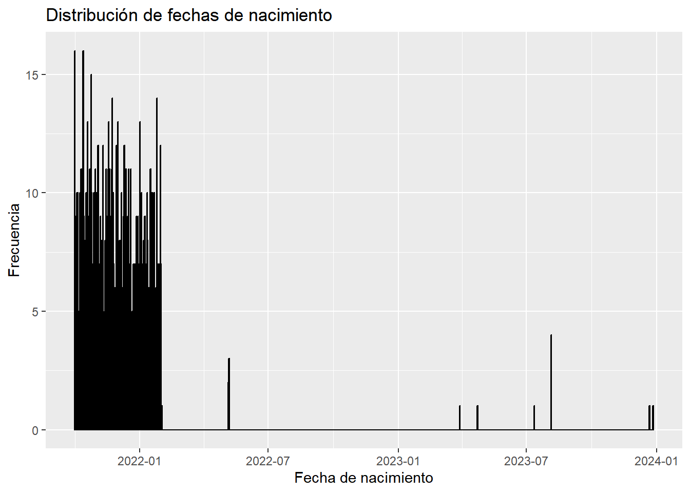

Capitulo 6 Rezagos
Los rezagos….
library(readr)## Warning: package 'readr' was built under R version 4.3.3# Leer el conjunto de datos desde el archivo CSV
data <- read_csv("data.csv", show_col_types = FALSE)
# Convertir la columna fecha_nacimiento a formato de fecha
data$fecha_nacimiento <- as.Date(data$fecha_nacimiento)
# Crear una nueva columna que contenga solo el año, mes y día
data$fecha_nacimiento_nueva <- format(data$fecha_nacimiento, "%Y-%m-%d")library(ggplot2)## Warning: package 'ggplot2' was built under R version 4.3.3# Convertir la columna fecha_nacimiento_nueva de caracteres a fecha
data$fecha_nacimiento_nueva <- as.Date(data$fecha_nacimiento_nueva)
# Crear un histograma de las fechas de nacimiento
ggplot(data, aes(x = fecha_nacimiento_nueva)) +
geom_histogram(binwidth = 1, color = "black", fill = "blue") +
labs(title = "Distribución de fechas de nacimiento",
x = "Fecha de nacimiento",
y = "Frecuencia")